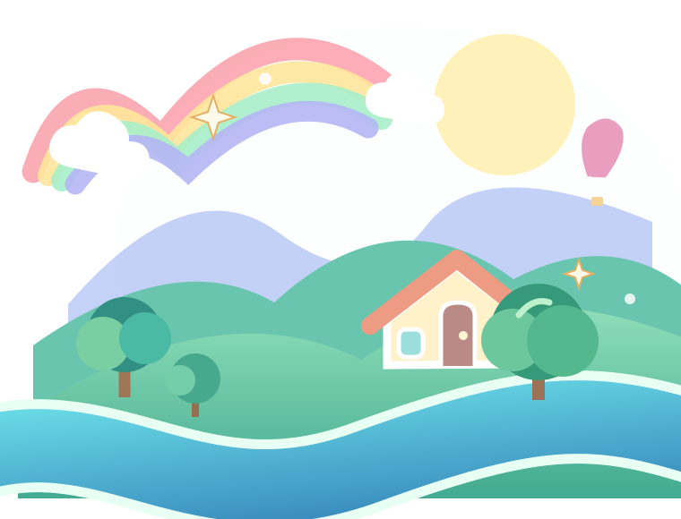
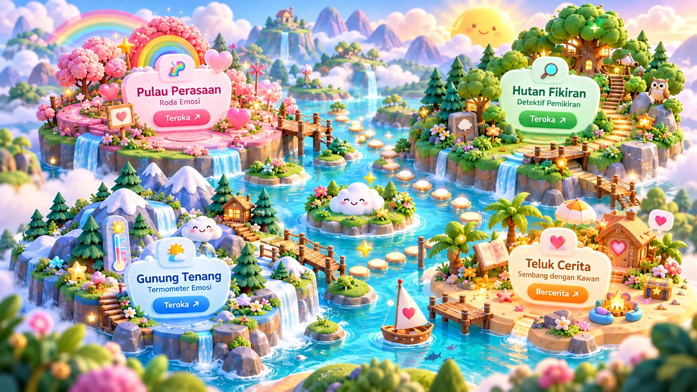

SELAMAT DATANG KE DUNIA EMOSI
Setiap perasaan
ada dunianya.
Ikut Kawan menjelajah dunia yang penuh warna. Kenali emosi, fahami fikiran, dan temui langkah kecil yang sesuai dengan diri kamu.
✦Tak ada perasaan yang salah. Kamu boleh mula perlahan-lahan.

Kawan sedia menemani!Satu langkah kecil pun bermakna.
01Kenal emosi
02Fahami cerita
03Pilih langkah kecil
Ini ruang untuk kamu. Kamu boleh jawab ikut keselesaan, langkau soalan yang belum sedia dijawab, dan minta bantuan bila perlu.
✦ SELAMAT DATANG KE DUNIA AJAIB ✦
Peta Pengembaraan Emosi
Empat destinasi ajaib menanti kamu. Pilih tempat yang menarik hatimu — setiap langkah ialah peluang untuk lebih memahami diri.
0 daripada 3aktiviti diterokai
Mod bacaan

PILIH DESTINASI · JOM MULA!
Hai! Kamu boleh mula dari mana-mana.
✦ IKUT RENTAK KAMU
Hari ini kamu mahu cuba apa?
Pilih ikut keselesaan. Ini bukan ujian dan tiada pilihan yang salah.
Pilih satu perkara dan Kawan akan tunjukkan tempat yang boleh kamu cuba.
0 / 3 aktiviti asas telah dicubaPerasaan kamu penting. Kalau kamu tidak selamat, beritahu guru atau orang dewasa yang dipercayai.
Aktiviti peta ini tidak dihantar ke rekod GBK.
Ruang sembang Kawan CBT sedia mendengarHai! Jom teroka satu langkah kecil. ☁️
Kongsi setakat yang kamu selesa. Jangan masukkan nama penuh atau maklumat peribadi yang tidak perlu.